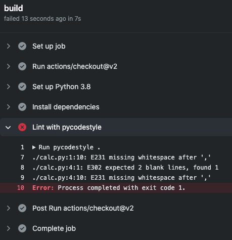

Github Actionsでタスクをスケジュール実行する
お仕事で、とある処理を自動化できたらうれしくない？ということがあり、 Github Actions の定期実行を使えば解決できるのではないかと思ったのでやってみました。
とりあえず、 Pythonコードに対して、定期的にLintする ということを目標にしてみたいと思います。「コミットする前にlinterとかformatterとか通してこい！」と思いますし、この目標自体あまり役に立つとは思えませんが、定期実行を実現できるかどうかをゴールにしました。
環境を用意する
手元にPython3.8が入っていたのでこれを使います。venvで仮想環境も作成しましたが省略します。
まずはlinterとformatterを入れます。formatterは使わないかも。
$ pip install pycodestyle autopep8
$ pip freeze
autopep8==1.5.4
pycodestyle==2.6.0
toml==0.10.1
コードを用意する
lintで引っかかるようなコードをわざと書いてみます。
# calc.py
def add(a,b):
return a+b
def sub(a,b):
return a-b
この状態で、lintを実行してみます。
$ pycodestyle .
./calc.py:1:10: E231 missing whitespace after ','
./calc.py:4:1: E302 expected 2 blank lines, found 1
./calc.py:4:10: E231 missing whitespace after ','
lintできました。
誰かがコミット前にlintを通さなかったという体で、とりあえず見なかったことにしてコミットしてしまいます。
Github Actionsにワークフローを登録する
Github Actionsにワークフローを登録します。
テンプレートの中にある Python application というものが使いやすそうだったので、それをベースにして編集していきます。
トリガーの設定で on.schedule を設定するだけで、あとは普通のワークフローと同じ書式ですね。
cronのフォーマットは、公式もオススメの crontab guru が見やすかったです。
name: Scheduled job
# JST 13:00 (Sat)
on:
schedule:
- cron: '0 4 * * 6'
jobs:
build:
runs-on: ubuntu-latest
steps:
- uses: actions/checkout@v2
- name: Set up Python 3.8
uses: actions/setup-python@v2
with:
python-version: 3.8
- name: Install dependencies
run: |
python -m pip install --upgrade pip
pip install pycodestyle autopep8
if [ -f requirements.txt ]; then pip install -r requirements.txt; fi
- name: Lint with pycodestyle
run: |
pycodestyle .
あとは実行されるのを待ちます。

動きました！
補足
一番ハマったところは、適当に作ったブランチでは動かないらしいところです。ドキュメントにあるようにmasterにマージしたところ動くようになりました。
Scheduled events
Scheduled workflows run on the latest commit on the default or base branch.
さらに、時間はわりと適当です。5分くらいは平気で遅れて発火していました。
まとめ
通常のGithub Actionsのワークフローと特に違いがなく、トリガーの部分の記載を変更するだけで実現することができました。
あとは、このワークフローの中でいろいろコマンドを頑張ってもいいでしょうし、iOSならfastlaneを呼び出すなどすればさらにできることが増えると思います。